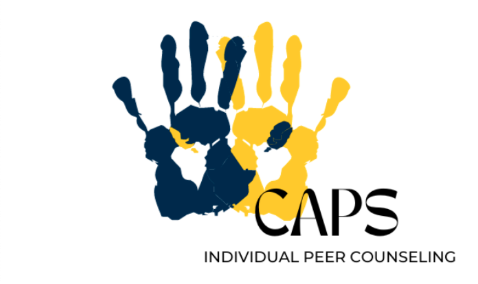

Counseling and Psychological services at the University of Michigan
At the University of Michigan, we are committed to creating an environment based on our values of multicultural, multi-disciplinary and multi-theoretical practices that allow our diverse student body to access care, receive high quality services and take positive pathways to mental health.
CAPS provide a wide range of different services that provide differental mental health support.
Services
Individual Counseling

We provide individualized peer counselling for all students who requires a more private setting.
Group Counseling
For students who prefer to work in a group setting, we offer group counselling sessions.
Workshops
We have weekly workshops to provide more information regarding mental health